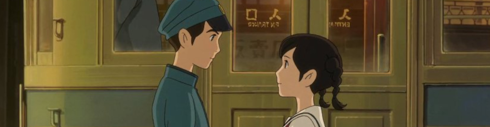
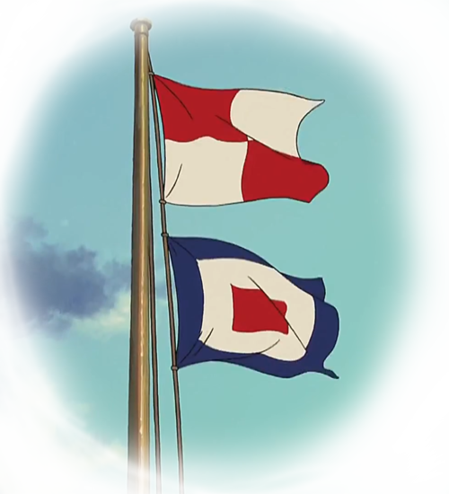

ストーリー
上を向いて歩こう

1963年、横浜。
港の見える丘にあるコクリコ荘。その下宿屋を切り盛りする１６才の少女・海。彼女は、毎朝、海に向かって、信号旗をあげる。旗の意味は「安全な航行を祈る」。タグボートで通学していた１７才の少年・俊は、海の上からその旗をいつも見ていた。
翌年に東京オリンピックを控え、人々は古いものはすべて壊し、新しいものだけが素晴らしいと信じていた。そんな時代に、横浜のとある高校で、小さな紛争が起きていた。古いけれど、歴史と思い出のつまった文化部部室の建物、通称カルチェラタン。それを取り壊すべきか、保存すべきか。そんな事件の中で、海と俊は出会う。俊はその建物を守ろうと学生たちに訴える。海はその建物の良さを知ってもらおうと大掃除を提案する。
徐々に惹かれ合うふたりに、ある試練が襲いかかる。
「嫌いになったのなら、はっきりそう言って」
「俺たちは兄妹ってことだ」
「どうすればいいの？」
自分たちは兄妹かもしれない。それでも、ふたりは現実から逃げずにまっすぐに進む。そして、戦争と戦後の混乱期の中で、親たちがどう出会い、愛し、生きたかを知っていく。そんな中で、ふたりが見出した未来とは——。